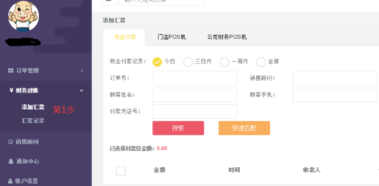
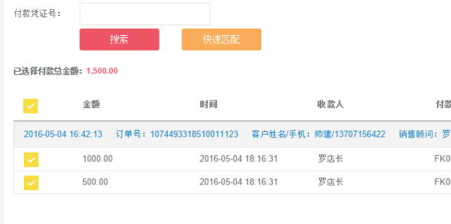
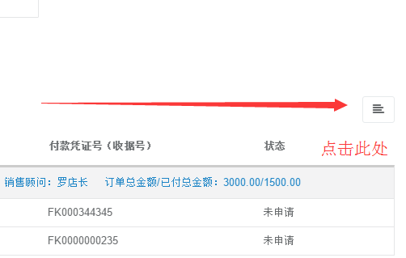
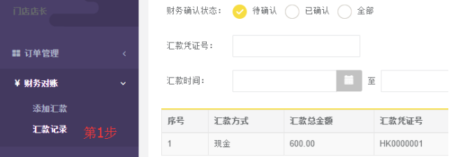
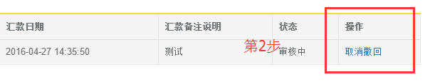
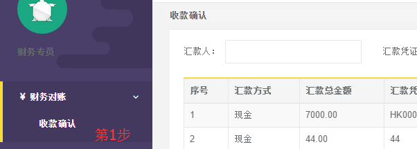
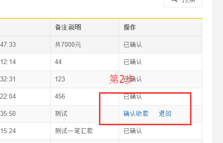

财务对账
简介
门店店长需将每日收款上交至公司财务，公司财务负责核对公司每日收支流水是否一致。
操作
添加汇款
第1步：进入汇款页面
【门店店长】登入系统后，点击左侧菜单财务对账>>添加汇款，进入添加汇款界面

第2步：选择收款信息
搜索功能：系统默认显示今日收到的所有款项，如需查看其它日期的，请勾选其它选项，系统支持按照销售订单号、销售顾问姓名，顾客姓名，顾客手机号，付款凭证号进行模糊搜索。
根据顾客付款类型（现金，门店POS机，公司POS机），在对应选项卡中找到汇款包含的订单付款明细，并勾选选中。
勾选完成后，核对已选择付款总金额是否与实际汇款总金额一致。
温馨小提示：点击“快速匹配”，输入汇款凭证号，可直接自动选中此付款凭证号的付款信息，无需人工辨别。

第3步：提交汇款
勾选总金额与实际汇款金额一致，确认无误后，提交财务确认，点击页面右侧小图标，滑出提交信息填写窗口。

汇款记录
第1步：查看汇款信息
拥有【门店店长】角色的账号登录系统后，点击系统左侧菜单栏财务对账>>汇款记录进入汇款记录页面。
列表搜索条件支持按照财务是否确认状态、汇款凭证号、汇款时间进行查询。

第2步：取消撤回
店长可对财务还未进行确认的汇款记录，进行撤回操作，取消此次汇款确认申请。
点击“取消撤回”，在确认询问窗，点击确定完成撤回操作。

财务收款确认
第1步：查看汇款信息
拥有【财务专员】角色的账号登入系统，点击左侧菜单财务对账>>收款确认，进入收款确认界面。

第2步：核对后确认/退回
查看或通过搜索定位到需确认的汇款信息，搜索条件支持按照汇款人、汇款凭证号进行搜索。
在列表的操作栏，点击“确认收款”或“退回”进行操作。
